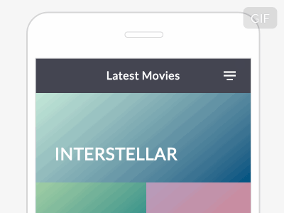

Introduction
AndroidPullMenu is an Open Source Android library that allows developers to easily create applications with pull menu. The aim of this library is to allow users that with a simple pull gesture to choose actions that they want to be executed.
This actions stand for refreshing options like refreshing the latest news, most viewed news, most commented views etc. or adding more actions inside view when you don’t want to implement these actions inside sliding menu. It can be implemented inside ScrollView, GridView, ListView, WebView, Fragments + Tabs.

Simple Example
The implementation should be easy if you are familiar with this library: ActionBar-PullToRefresh
Java code:
public class MainActivity extends ActionBarActivity implements OnRefreshListener{
private PullMenuLayout mPullMenuLayout;
@Override
protected void onCreate(Bundle savedInstanceState) {
super.onCreate(savedInstanceState);
setContentView(R.layout.activity_scrollview);
// Now find the PullMenuLayout and set it up
mPullMenuLayout = (PullMenuLayout) findViewById(R.id.pm_layout);
ArrayList<String> mList = new ArrayList<String>();
mList.add("Top Stories");
mList.add("Most Recent");
mList.add("Interest");
mList.add("Refresh");
// We can now setup the PullMenuLayout
ActionBarPullMenu.from(this)
.allChildrenArePullable()
.listener(this)
.setup(mPullMenuLayout,android.R.color.white,mList);
}
@Override
public void onRefreshStarted(View view, int position, String selectedField) {
Toast.makeText(MainActivity.this, position + " # "+selectedField, Toast.LENGTH_SHORT).show();
/**
* Simulate Refresh with 4 seconds sleep
*/
new AsyncTask<Void, Void, Void>() {
@Override
protected Void doInBackground(Void... params) {
try {
Thread.sleep(Constants.SIMULATED_REFRESH_LENGTH);
} catch (InterruptedException e) {
e.printStackTrace();
}
return null;
}
@Override
protected void onPostExecute(Void result) {
super.onPostExecute(result);
// Notify PullMenuLayout that the refresh has finished
mPullMenuLayout.setRefreshComplete();
}
}.execute();
}
}
XML Code:
<al.shkurti.pullmenu.library.PullMenuLayout
xmlns:android="http://schemas.android.com/apk/res/android"
android:id="@+id/pm_layout"
android:layout_width="match_parent"
android:layout_height="match_parent">
<ScrollView
android:id="@+id/scrollview"
android:layout_width="fill_parent"
android:layout_height="fill_parent"
android:padding="8dp"
android:scrollbarStyle="outsideInset">
<TextView
android:layout_width="fill_parent"
android:layout_height="wrap_content"
android:text="@string/_text"/>
</ScrollView>
</al.shkurti.pullmenu.library.PullMenuLayout>
Sample:
Developed by:
- Armando Shkurti - shkurtiarmando@gmail.com
Credits:
Inspired by:
- Fabrizio Bianchi - Pull Menu Interaction Concept demonstration of his work in codepen.io:

Opinions for this concept:
https://news.layervault.com/stories/40871-pull-menu-menu-interaction-concept
Special Thanks
@chrisbanes: https://github.com/chrisbanes/ActionBar-PullToRefresh
@jpardogo and @astuetz: https://github.com/jpardogo/PagerSlidingTabStrip\
@castorflex: https://github.com/castorflex/SmoothProgressBar
License
Feel free to use it in your Android apps and also include the license in your app. I would be grateful if you would inform me about its usage: shkurtiarmando(at)gmail(dot)com
Copyright 2015 Armando Shkurti
Licensed under the Apache License, Version 2.0 (the "License");
you may not use this file except in compliance with the License.
You may obtain a copy of the License at
http://www.apache.org/licenses/LICENSE-2.0
Unless required by applicable law or agreed to in writing, software
distributed under the License is distributed on an "AS IS" BASIS,
WITHOUT WARRANTIES OR CONDITIONS OF ANY KIND, either express or implied.
See the License for the specific language governing permissions and
limitations under the License.